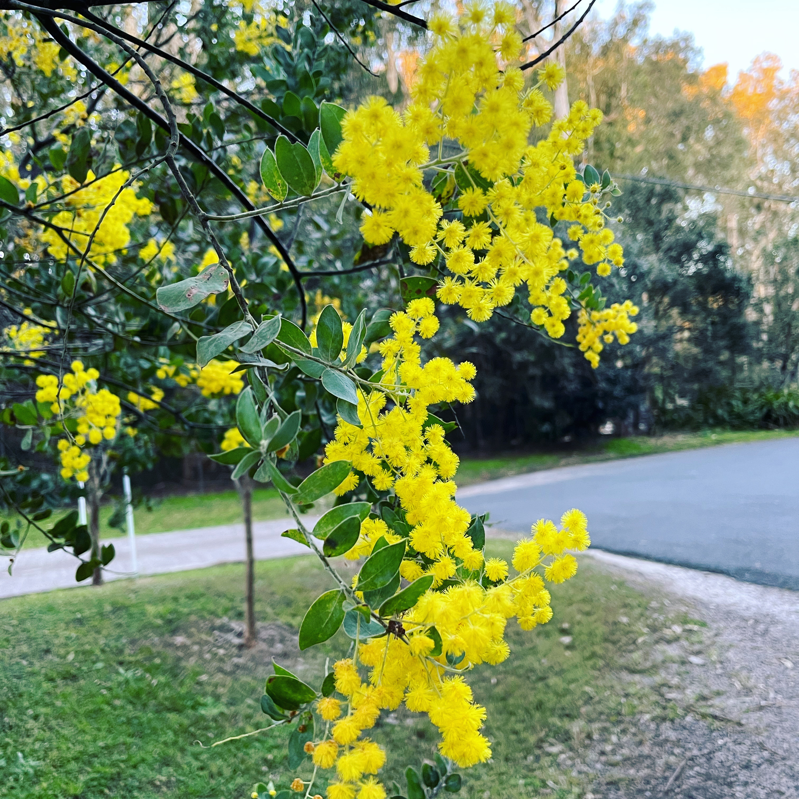
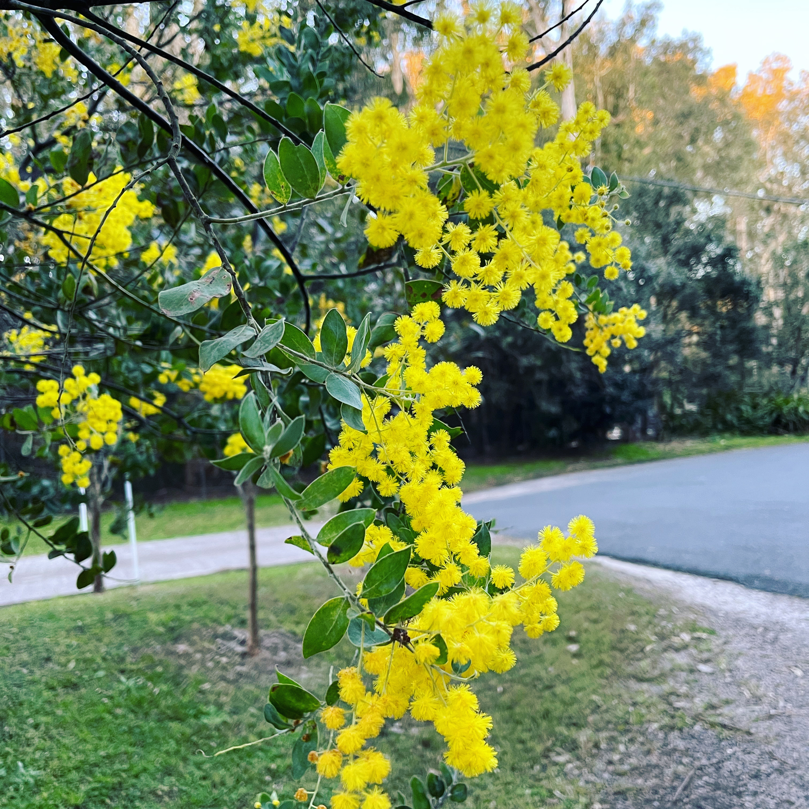

Long Hoa Chung
...telling impactful stories through data — bridging science and analytics.
About Me

At the NSW Parliament House during Science Week 2023, showcasing my image of human liver tissue captured by mass spectrometry—analysed from over 20,000 data points.
My journey began in biomedical research, advancing lipidomics, proteomics, and mass-spectrometry imaging. I’ve since expanded into AI and data analytics across finance, retail, and healthcare. Each project reflects my passion for blending science, technology, and creativity to deliver data-driven insights and solve real-world challenges.
Portfolio
I bring a unique blend of expertise spanning biomedical research and modern data analytics. From pioneering DESI-MS imaging (laboratory + instrument-acquired big data) to building AI-driven models for financial, retail, and healthcare datasets, my work demonstrates how rigorous science and data innovation can deliver impact across industries.
Analysed Stack Overflow developer survey data and built IBM Cognos dashboards to reveal tech trends, emerging skills demand, and workforce implications.


Solution
Built dashboards using Python + Cognos to track technology adoption, highlight emerging skills, and guide hiring, training, and investment.
Developed ML models to predict loan defaults using financial data. Ranked in the top 92% globally in Coursera’s IBM Data Science competition.


Solution
Applied feature engineering and classification models to identify at-risk borrowers, testing robustness on both ordinary and extreme cases.

Analysed online retail transactions to uncover sales trends, customer behaviour, and product performance insights.


Solution
Delivered insights on top products, seasonal demand, and customer segments to support marketing, forecasting, and retail strategy.

Predicted lipid retention times in LC-MS using machine learning models, improving annotation accuracy and supporting lipidomics workflows.


Solution
Built predictive models with molecular descriptors and chromatographic conditions to estimate lipid retention times, reducing manual validation.

Predicted customer churn for streaming businesses using logistic regression, random forest, and gradient boosting models.

Solution
Applied robust scaling across 21 variables, engineered features, and compared models using cross-validation and AUC scores to select the best performer.

Skills
I bring a diverse technical toolkit spanning programming, analytics, and visualization. My expertise in Python, R, SQL, and dashboarding tools (IBM Cognos, matplotlib, seaborn) allows me to translate raw data into clear insights and impactful solutions.

- Data Analytics & Statistics: EDA, descriptive statistics, trend analysis, business analytics.
- Programming & Tools: Python, R, SQL, Jupyter, IBM Cognos, Looker, Power BI.
- Machine Learning & AI: Predictive modelling, AI reliability, feature engineering.
Experience
A journey from scientific discovery to data innovation — bridging research, analytics, and AI leadership.

Research Scientist
PhD scientist with expertise in lipidomics, proteomics, and DESI imaging, publishing novel findings and earning multiple research awards.

Data Scientist
Transitioned into data science and AI, delivering predictive analytics pipelines, business dashboards, and ranking Top-92 in a global Coursera challenge.

AI & Leadership
Current work spans AI model evaluation (Outlier AI), financial/operational analytics, and leadership roles integrating data strategy with ethical AI.
Publications
My research integrates big data in genomics, proteomics, and lipidomics with advanced computational and instrumental approaches. This combination has revealed new disease mechanisms in metabolic disorders, cancer, and neurodegeneration — supporting better diagnostics and healthier ageing. Key contributions include AI-driven proteomics pipelines and real-time lipidomics imaging.
Here is a selection of highlighted papers from my research in lipidomics, proteomics, and imaging mass spectrometry. Please find the full list of publications on my profile.
Lipidomic Profiling of Human Heart Tissue
Journal of Molecular Biology, 2023
Advanced DESI-MS imaging to map lipid alterations in cardiovascular disease.
Read PaperIntegrative Omics in Liver Disease
Nature Metabolism, 2022
Combined proteomics and lipidomics to uncover novel metabolic biomarkers.
Read PaperMass Spectrometry Imaging of Liver Cancer
Analytical Chemistry, 2021
Developed spatial metabolomics workflow to characterize tumour microenvironments.
Read PaperHobbies
🌹 Gardening
Gardening connects me to nature through flowers, fruit trees, and seasonal plants.


🍳 Cooking
Experimenting in the kitchen is one of my favourite creative outlets.


🚗 Travelling
Road trips recharge my energy and inspire fresh perspectives.

 

Contact Me
If you'd like to get in touch, please fill out the form below or reach me via social media.